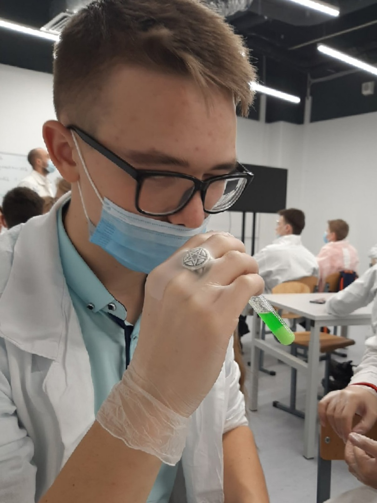
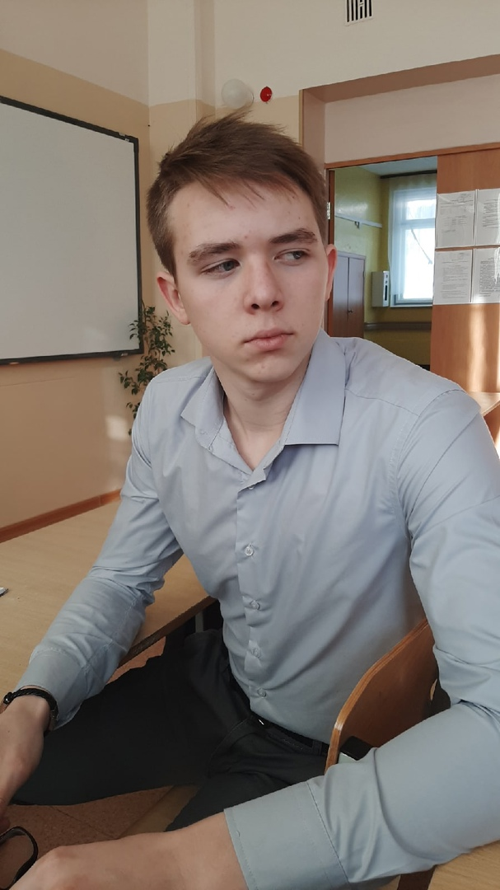
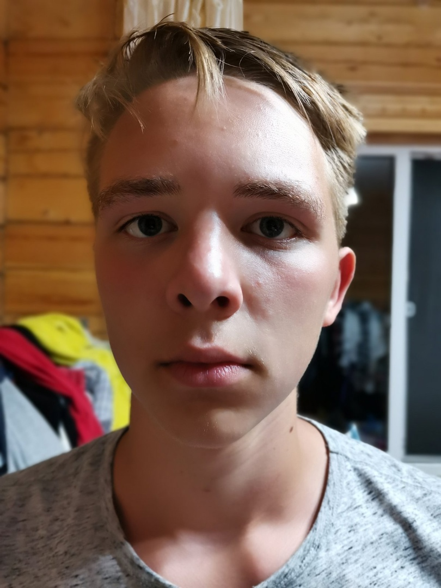
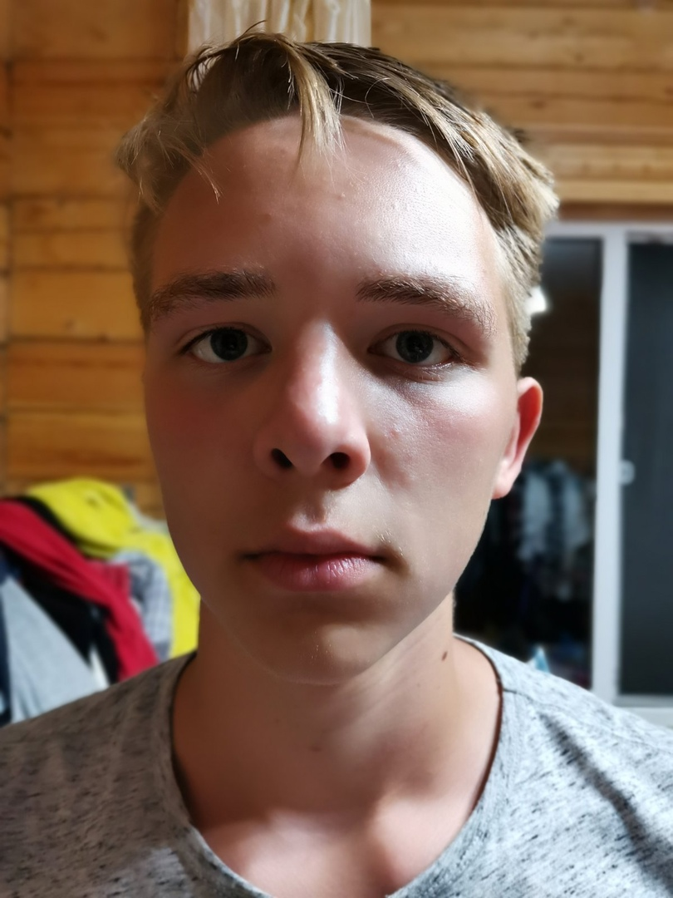

Ермолин Даниил Сергеевич
Ермолин Даниил
человек высокий, умный. На этом сайте вы узнаете как он выглядит, чем обычно занимается, как себя ведёт и все остальное из его жизни.
Как выглядит Даниил
- Лицо и прическа


 

- Короткая челка зачесанная направо
- Светлые волосы
- Прыщявое лицо
- Носит очки
- Телосложение
- Не толстый
- Длинный
- Руки в прыщях
- Что он носит
- Джинсы
- Синюю кофту
- Рубашку с короткими рукавами
- Белые кросовки
- Цветные носки
- Фиолетовый рюкзак
Чем он занимается
Даниил инжинер. Все время пропадает на различных конкурсах и все время что то мастерит. Он не сидит на месте и развивается в школьном кабинете технологии. Он не ходит на уроки, но домашку он все же делает.
Иногда когда он заканчивает со своим проектом и не придумал нового, он приходит на уроки но зачастую не понимает тему. На уроках он сидит в наушниках и иногда спит, связанно это с тем что дома он работает до поздна над своими проектами.
Если вам нужна будет помощь в проекте или презентации то пишите ему в ВК.
Где Даниил находится
Живет он в России, город Нижневартовск. Проживает в дачном домике, там у него есть свой мопед. Учится в школе N29 в 9 классе.